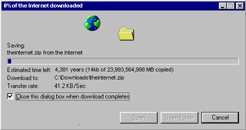

• 大杂烩
互联网的尽头
这个网页号称“互联网的尽头”：The end of the Internet
上面的内容在这里都可以完全呈现出来：
Congratulations!
恭喜！
You have finally reached the end of the internet!
There’s nothing more to see, no more links to visit.
You’ve done it all.
This is the very last page on the very last server at the very far end of the internet.
你终于来到了互联网的尽头！
再没有可以浏览访问的内容。
你都看完了。
这里就是互联网尽头的最后一台服务器上的最后一个页面。
You should now turn off your computer and go do something useful with the rest of your life. *
Suggestions:
- Read a book
- Do some public service
- Personally interact with your neighbors that you’ve probably only met online
- Plant a tree
- Introduce yourself to those other people who live at your house (your family).
* Please don’t forget to turn off the lights on your way out.
现在你该关掉电脑，在余生中去干点有用的事情了。
建议：
- 读书
- 公共服务
- 和之前只在网上遇到过的邻居打打招呼
- 种一棵树
- 向同住一屋的其他人（你的家庭）介绍你自己
* 走的时候别忘了关灯
In order to save time, we will now start downloading the internet to your local drive.
为了节约时间，现在会把整个互联网下载到你的本地磁盘中。
